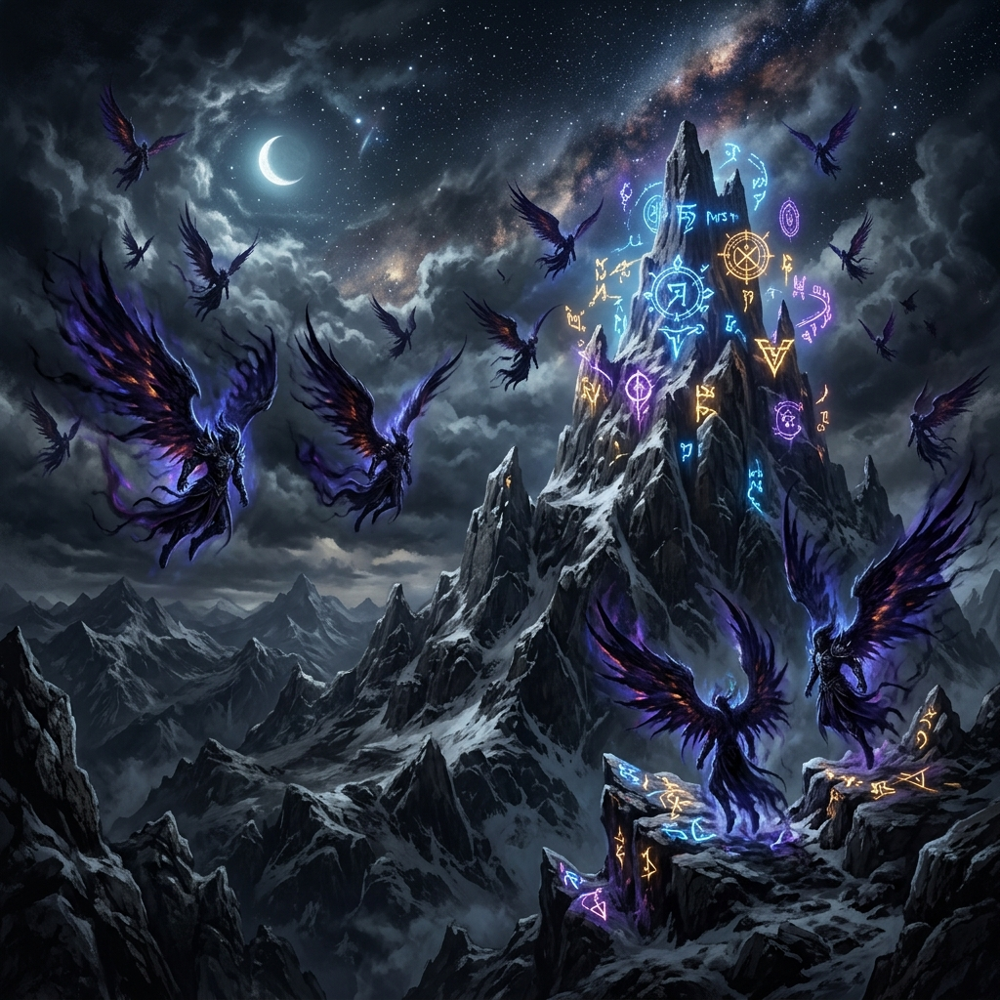
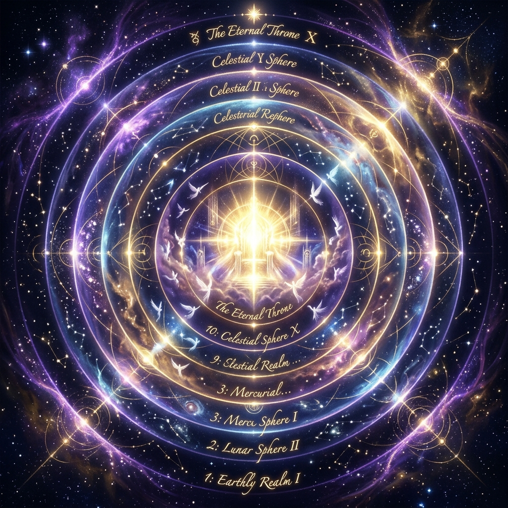
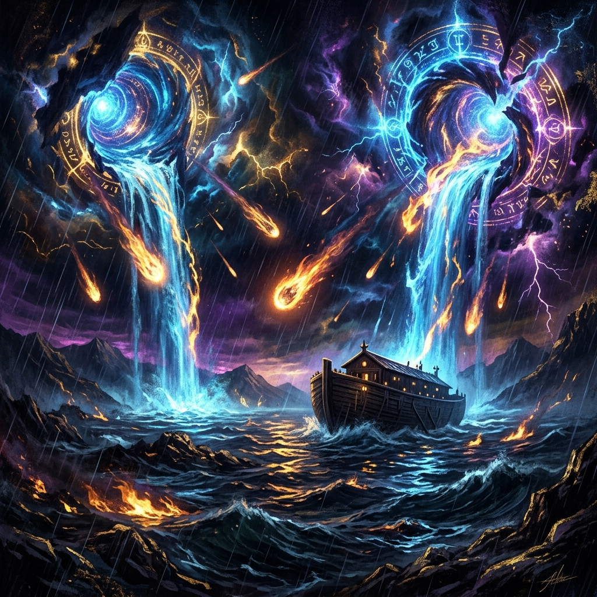
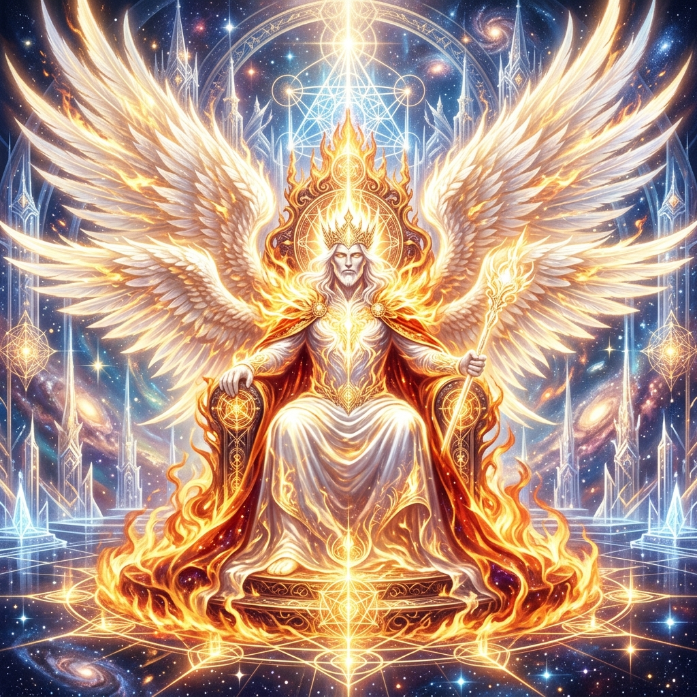
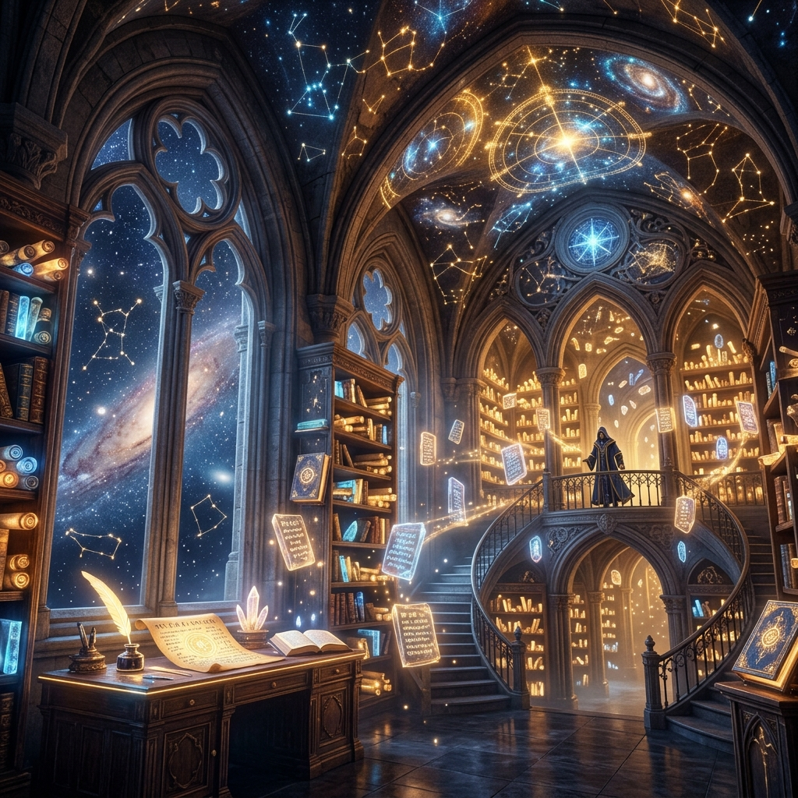
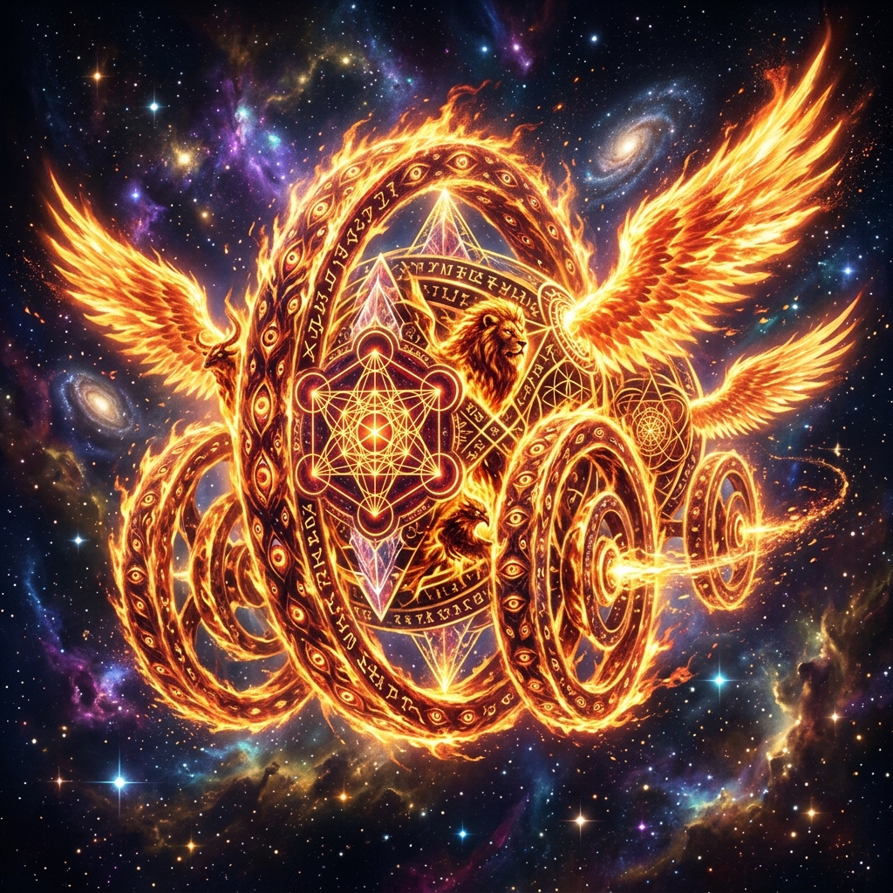

O Escriba Sagrado e os Livros Perdidos
Enoque, o sétimo patriarca antediluviano na linhagem direta de Adão (Adão → Set → Enos → Cainan → Mahalalel → Jared → Enoque), ocupa um dos papéis mais singulares e misteriosos da literatura teológica antiga. Segundo a breve passagem de Gênesis 5:24, Enoque "caminhou com Deus; e já não era visto, porque Deus o levou para Si". Em vez de experimentar a morte biológica comum, Enoque foi arrebatado diretamente para as moradas divinas, servindo como uma ponte biográfica viva entre a Terra e o Céu.
Os textos atribuídos a ele, conhecidos coletivamente como Os Livros de Enoque, pertencem ao gênero apocalíptico e pseudepígrafo (ou apócrifo), não integrando o cânon bíblico da maioria das tradições judaicas e cristãs, com exceção notável da Igreja Ortodoxa Etíope Tewahedo. Durante séculos, estas obras foram dadas como perdidas no Ocidente, sobrevivendo apenas em lendas místicas e citações fragmentárias de pais da igreja primitiva, até que manuscritos completos foram redescobertos na Etiópia no final do século XVIII e, posteriormente, fragmentos em aramaico e grego foram desenterrados nas cavernas de Qumran (Manuscritos do Mar Morto) em meados do século XX.
A Linhagem e Genealogia Sagrada
Enoque está inserido no centro da genealogia patriarcal antediluviana. Ele é o sétimo descendente direto na linha iniciada por Adão: Adão → Set → Enos → Cainan → Mahalalel → Jared → Enoque. Filho de Jared, ele se tornou pai de Matusalém (o homem de maior longevidade registrado nos textos antigos) e bisavô de Noé, o construtor da arca.
Características Terrenas e Espirituais
A existência terrena de Enoque é marcada por símbolos numéricos e espirituais únicos:
- A Longevidade Solar: Ele viveu exatamente 365 anos terrestres antes de sua ascensão, número que corresponde precisamente aos dias do ciclo solar anual, refletindo seu profundo conhecimento cosmológico.
- Caminhar com o Divino: Sua vida foi caracterizada por uma comunhão perfeita e inabalável com o Criador, servindo de elo ético em um mundo em rápida degeneração moral.
- O Escriba da Presença: Antes de sua unção celestial, já atuava registrando pregações e advertências éticas destinadas às gerações futuras.
As Três Grandes Versões
A literatura enoquiana divide-se em três obras principais, compostas em épocas e contextos culturais diferentes, mas que se complementam na construção do misticismo cosmológico:
"A Sabedoria não encontrou um lugar onde pudesse habitar, então sua casa foi estabelecida nos céus. Ela veio habitar entre os filhos dos homens, mas não encontrou abrigo. Então a Sabedoria retornou ao seu lar e tomou seu assento entre os anjos."
- Primeiro Livro de Enoque (1 Enoque — Versão Etíope): Composto originalmente entre os séculos III a.C. e I a.C., é o texto mais antigo e abrangente. Está dividido em cinco seções principais: o Livro dos Vigilantes (queda dos anjos), o Livro das Parábolas (julgamento final e o Filho do Homem), o Livro Astronômico (movimento das luminárias celestes), o Livro dos Sonhos (visões alegóricas do dilúvio e da história humana) e as Cartas de Enoque.
- Segundo Livro de Enoque (2 Enoque — Versão Eslava): Também chamado de "Livro dos Segredos de Enoque", datado aproximadamente do século I d.C. É um texto de forte inclinação mística que narra a viagem de Enoque através de dez céus concêntricos, revelando a geografia espiritual do cosmos e a posterior transformação de sua natureza física.
- Terceiro Livro de Enoque (3 Enoque — Versão Hebraica): Pertence à tradição rabínica medieval (séculos V a X d.C.) associada ao misticismo da *Merkabah* (carruagem divina). Descreve a ascensão do Rabi Ismael ao céu, onde ele encontra Enoque já metamorfoseado em Metatron, o governante supremo de todas as hostes angélicas e o "Pequeno YHWH".
Importância e Canonicidade
Embora rejeitado pelo Concílio de Laodiceia (século IV d.C.) por suas vívidas descrições cosmológicas e anomalias angélicas que desafiavam a nascente ortodoxia, o Livro de Enoque influenciou profundamente o pensamento judaico do período do Segundo Templo e o cristianismo primitivo. O próprio Novo Testamento cita Enoque diretamente na epístola de Judas 1:14-15, demonstrando que o texto circulava com autoridade espiritual entre os apóstolos. A preservação integral do manuscrito etíope (em língua Ge'ez) é um testemunho da profunda reverência que o misticismo do escriba manteve nas igrejas orientais.
Gênese Textual e Filologia
Apesar de Enoque ser citado de forma extremamente concisa no texto bíblico tradicional, a tradição que se seguiu é fruto de séculos de literatura midrásica e expansões pseudo-epigráficas. Estudos filológicos de pesquisadores como R.H. Charles e James VanderKam revelam que a língua original de 1 Enoque era o aramaico (como evidenciado pelos fragmentos dos Manuscritos do Mar Morto em Qumran), posteriormente traduzido para o grego e preservado integralmente apenas no idioma Ge'ez (etíope clássico).
Confiabilidade Histórica vs. Literatura Religiosa
Pesquisadores modernos, como Gabriele Boccaccini, classificam os escritos de Enoque como a expressão de um movimento teológico judaico específico do período do Segundo Templo (séc. III a.C. a I d.C.), denominado "Enoquismo". Do ponto de vista histórico, o texto não deve ser lido como uma biografia factual do patriarca antediluviano, mas sim como uma rica produção literária que reflete as preocupações escatológicas, a busca por justiça social e o desenvolvimento da angelologia judaica em resposta a influências culturais persas e helenísticas.
A Queda dos Vigilantes e de Azazel
O Livro dos Vigilantes (capítulos 6 a 36 de 1 Enoque) narra o evento mais dramático e catastrófico do mundo antediluviano: a rebelião dos Grigori (Vigilantes ou Sentinelas). Estes eram anjos de alta hierarquia encarregados por Deus de observar a criação física. Contudo, ao contemplarem a beleza das filhas dos homens, foram tomados pela cobiça.
Liderados por Samyaza e por seu influente co-líder Azazel, duzentos desses Vigilantes conspiraram para abandonar suas habitações celestes. Reuniram-se no cume do Monte Hermon (cujo nome em hebraico deriva de Cherem, significando "maldição" ou "compromisso sob juramento"), onde realizaram um pacto solene de cumplicidade mútua, cientes da gravidade do pecado que cometeriam ao misturar o espiritual com o carnal.
"Então Samyaza disse-lhes: 'Temo que não queirais cumprir esta ação, e eu sozinho pagarei pelo castigo de um grande pecado'. Mas todos responderam: 'Façamos todos um juramento e nos comprometamos sob maldições a não recuar deste projeto até executá-lo'."
A Geração dos Nephilim
A transgressão dos Vigilantes rebeldes gerou uma contaminação biológica e moral profunda no mundo antediluviano. A união carnal entre os anjos rebeldes e as filhas dos homens resultou no nascimento dos Nephilim, gigantes de estatura colossal e força sobre-humana (medindo entre 7 e 10 metros, com relatos hiperbólicos citando estaturas ainda maiores). Desprovidos de alma humana e tomados por apetites insaciáveis, os gigantes consumiram toda a subsistência humana da terra. Quando os recursos agrícolas se extinguiram, passaram a caçar e a devorar os próprios homens, espalhando uma onda de violência, destruição e derramamento de sangue indiscriminado.
A Profanação do Conhecimento
Além da contaminação biológica, os Vigilantes transmitiram à humanidade saberes sagrados celestiais que foram desvirtuados para a maldade e orgulho material. Estes ensinamentos proibidos dividem-se em cinco grandes áreas de influência corrompedora:
- Metalurgia e Tecnologia: Azazel e Asael revelaram como extrair os metais das profundezas da terra e trabalhá-los, iniciando a manipulação tecnológica de elementos que deveriam jazer ocultos.
- Armamento e Arte Militar: Gadreel e Azkeel ensinaram a forjar espadas, facas, escudos e armaduras de metal, introduzindo golpes de morte e a guerra sistematizada entre a progênie dos homens.
- Vaidade, Luxo e Comércio: Zavebe e Azazel introduziram as artes dos cosméticos (uso de antimônio nas pálpebras), o embelezamento das sobrancelhas, a lapidação de pedras preciosas, ornamentos luxuosos e a cobiça pelo comércio de riquezas.
- Magia, Bruxaria e Ervanária: Samyaza e Armaros ensinaram sortilégios, encantamentos, magia negra, o preparo de ervas medicinais/mágicas e a manipulação de fórmulas mágicas para interferir na ordem natural.
- Presságios e Ciências Naturais: Kokabiel, Tamiel, Akibeel e Ananel ensinaram a ler o curso dos corpos celestes, astronomia, os signos do céu e das estrelas, os tremores de terra e a meteorologia (aparição de nuvens e chuva) com objetivos divinatórios egoístas.

O Códice dos Vigilantes (Interativo)
Selecione um dos líderes rebeldes na lista abaixo para ler os nomes hebraicos, os ensinamentos proibidos que trouxeram aos homens e o julgamento decretado por Deus:
Clique em um Vigilante para revelar seus mistérios...
Diferenças Teológicas: Lúcifer vs. Azazel
Na tradição teológica cristã posterior, Lúcifer é descrito como o querubim orgulhoso que se revoltou no céu antes da criação física e foi precipitado para reinar sobre o inferno. O Livro de Enoque, porém, introduz Azazel e os Vigilantes em uma dinâmica diferente: eles desceram voluntariamente à terra após a criação humana, impulsionados pela cobiça física e vaidade. Azazel corrompe a humanidade não por possessão espiritual silenciosa, mas pela profanação tecnológica e epistemológica (tecnologia de guerra, ornamentos, maquiagem). Ao fim, ele não é o governante de um inferno ativo, mas jaz acorrentado e soterrado nas trevas de Dudael, esperando sua destruição final pelo fogo.
O Ritual de Azazel e o Yom Kippur
Na teologia enoquiana, Azazel assume o papel de arqui-corruptor absoluto, sendo decretado que "toda injustiça e pecado sobre a terra sejam atribuídos a Azazel". Para conter essa infecção moral, Deus ordenou ao arcanjo Rafael que amarrasse Azazel de mãos e pés e o lançasse no deserto de Dudael, cobrindo-o de pedras ásperas e escuridão eterna.
Esse aprisionamento serve de base teológica para o ritual do Yom Kippur (Dia do Perdão) em Levítico 16. Os dois bodes do templo — um oferecido ao Senhor e o outro enviado ao deserto como "bode expiatório" dedicado a Azazel — representam a devolução simbólica do pecado do povo de Israel à sua verdadeira fonte ancestral, aprisionada nas trevas do abismo desolado.
A Jornada Mística pelos Dez Céus
O Segundo Livro de Enoque (versão eslava) oferece um dos roteiros cosmológicos mais detalhados do misticismo primitivo ao narrar a ascensão de Enoque através das dez esferas ou camadas celestes. Guiado por dois anjos de aparência indescritível e reluzente, o escriba humano atravessou as barreiras físicas da Terra para testemunhar o funcionamento das forças invisíveis do universo.
Esta viagem não representa apenas uma travessia espacial, mas uma jornada de purificação da própria consciência. Em cada céu, Enoque confronta mistérios astrológicos, o tormento de seres que violaram a harmonia cósmica e a adoração radiante das hostes que sustentam o trono divino.
A Escada de Luz dos Céus (Interativo)
Explore cada uma das 10 camadas celestes descritas por Enoque. Clique em um céu para desvendar suas características, seus guardiões e os segredos espirituais contidos nele:
Paralelos nos Sistemas Iniciáticos
A estrutura das 10 esferas celestes descrita nos textos enoquianos possui correspondências profundas com outros caminhos de misticismo comparado da humanidade:
- A Árvore da Vida Cabalística: As 10 camadas celestes refletem perfeitamente as 10 Sefiroth (emanações divinas), constituindo uma escada geométrica espiritual que o iniciado percorre desde o plano material de Malkuth até a coroa divina de Kether.
- Os Centros de Energia (Yoga): A subida enoquiana espelha o despertar da energia Kundalini, que ascende pelos centros vitais (chakras) do corpo sutil até a coroação espiritual no Sahasrara (o lótus de mil pétalas no topo da cabeça).
- O Sufismo Islâmico: A jornada através das esferas celestes assemelha-se ao percurso místico das estações da alma (*maqamat*), que culmina no aniquilamento do ego (*Fana*) na presença gloriosa do Amado.
- O Taoismo de Alquimia Interna: O retorno progressivo à energia primordial não-criada (*Wuji*), desfazendo as amarras da matéria passo a passo.
Os Céus como Níveis de Consciência
Sob uma ótica psicológica e esotérica, a jornada de Enoque pelas camadas celestes é uma representação da elevação progressiva da consciência humana:
- Céus Inferiores (1º ao 3º): A conscientização ética. A alma percebe que está sob observação divina (1º), confronta o tormento da desobediência e as consequências kármicas (2º), e se depara com a dualidade extrema e livre-arbítrio entre a luz do Paraíso e a dor do Inferno (3º).
- Céus Intermediários (4º ao 6º): O entendimento da harmonia cósmica. O iniciado aprende a ordem matemática e astronômica do universo (4º), integra a melancolia existencial dos Vigilantes arrependidos através da liturgia (5º), e compreende a hierarquia divina e a ordem social administrada pelos arcanjos (6º).
- Céus Superiores (7º ao 10º): A dissolução mística. A alma entra no limiar do fogo sagrado (7º), contempla as estrelas fixas do tempo em Muzaloth (8º), acessa os arquétipos atemporais da criação primordial (9º) e atinge a completa deificação (transformação em Metatron) no Trono de Glória (10º).
A Estrutura Geométrica do Cosmos
A cosmologia de Enoque não é apenas descritiva, mas rigorosamente geométrica. O universo é retratado como uma série de círculos concêntricos em torno do Trono Divino, com uma simetria micro-macrocósmica. Há 12 portais celestes dispostos nas quatro direções cardeais, determinando as saídas e entradas do Sol, da Lua e dos ventos. A recorrência de números sagrados como 3, 7 e 12 estabelece um padrão de harmonia e proporção que conecta a criação à mente matemática de Deus.
Os Corpos Celestes como Seres Inteligentes
Diferente do mecanicismo moderno, a astronomia descrita no Livro Astronômico (1 Enoque 72-82) atribui vida e consciência aos corpos celestes. O Sol, a Lua e as Estrelas não são esferas inertes, mas seres espirituais vivos governados por arcanjos e príncipes celestes. O Sol tem seu ciclo solar solar administrado por Rafael, enquanto a Lua e suas fases para a contagem do tempo são conduzidas sob a égide de Uriel. Cada constelação possui um regente angelical que garante que nenhum astro saia de seu curso ordenado por Deus.

O Clamor e a Conexão com o Dilúvio
O dilúvio global descrito na narrativa bíblica de Gênesis ganha uma justificativa muito mais complexa e cosmológica no Livro de Enoque. Em vez de ser apenas um castigo punitivo de ordem moral para a humanidade, o Dilúvio é revelado como uma **operação de resgate e reset cirúrgico** necessária para purificar a biosfera terrestre da infecção espiritual e hibridização provocada pelos Vigilantes caídos.
O Ciclo de Iniquidade e Violência
A introdução de artes de guerra, magia profana, vaidade desmedida e a presença destrutiva dos gigantes Nephilim criaram um ciclo insustentável. Os Nephilim dizimaram os recursos agrícolas, caçaram homens e animais e derramaram rios de sangue. O clamor das almas dos mortos e dos oprimidos na terra subiu ao reino celestial. Ouvindo esse lamento desesperado, os arcanjos Miguel, Gabriel, Rafael e Uriel apresentaram uma queixa solene e formal diante do Trono Divino, implorando pela intervenção da justiça cósmica.
"E as almas dos homens que morreram clamaram, dizendo: 'Levai o nosso julgamento ao Senhor Altíssimo!'. E Rafael e Miguel disseram a Deus: 'Tu vês o que Azazel fez... como Shemikhazah ensinou a magia... A terra toda está cheia de sangue e de injustiça'."
As Quatro Razões Teológicas do Dilúvio
Os escritos enoquianos detalham quatro razões imperativas pelas quais o cataclismo foi decretado:
- Limpeza e Purificação: A necessidade urgente de livrar a terra da contaminação biológica dos Nephilim e limpar o solo do sangue derramado.
- Punição Indireta: Trazer dor aos pais caídos (Vigilantes) ao testemunharem a aniquilação física de todos os seus filhos gigantes.
- Reset Epistemológico: Eliminar as tecnologias perigosas (como o forjamento de armas de destruição em massa) que a humanidade aprendeu e usava para sua autoaniquilação.
- Garantia de Sobrevivência: Interromper o processo de destruição antes que os Nephilim consumissem toda a humanidade, extinguindo a linhagem dos justos.
A Sentença e o Evento Cósmico
Diante da queixa angélica, Deus ordenou que o arcanjo Uriel fosse até Noé para instruí-lo sobre a destruição iminente e o segredo de sua salvação. O Dilúvio enoquiano não é retratado como mera chuva prolongada, mas como uma convulsão cósmica na qual as comportas celestes cuspiram fogo e as placas tectônicas subterrâneas se agitaram, sacudindo as fundações da criação para purificar a terra em suas raízes físicas.

Noé: Salvação Material vs. Ascensão Espiritual
Existe um paralelo e contraste fascinante na teologia enoquiana entre Noé (bisneto) e Enoque (bisavô):
- Noé (Salvação Material): Permaneceu humano em essência física, recebeu instruções práticas terrestres para construir a Arca e garantir a preservação da biologia terrestre pós-diluviana.
- Enoque (Ascensão Espiritual): Foi elevado dos planos terrestres antes do Dilúvio, teve seu corpo imortalizado em chamas de luz e tornou-se Metatron para servir de testemunha e registrador eterno dos atos cósmicos.
A Nova Humanidade e a Dispersão
Com a salvação de Noé e sua família na Arca, a humanidade recomeçou a partir de uma genética livre de hibridização e desprovida de conhecimentos belicosos profanos. Seus três filhos originaram as correntes civilizacionais do mundo pós-diluviano:
- Sem (Os Semitas): Herdeiro das chaves espirituais e monoteísmo devocional.
- Cam (Os Povos do Sul/África): Marcado pelas transgressões morais e complexos desafios éticos.
- Jafé (Os Povos do Norte/Ocidente): Responsável pela expansão geográfica e territorial.
Para evitar que a maldade humana ganhasse o mesmo poder tecnológico e vitalício de antes, a longevidade dos patriarcas foi reduzida drasticamente dos milênios antediluvianos para o limite aproximado de 100 anos, fragmentando e enfraquecendo a consolidação do pecado ao longo das gerações.
A Transformação no Trono de Metatron
O ápice absoluto do misticismo apócrifo ocorre no Terceiro Livro de Enoque, que relata a apoteose e a transfiguração final do escriba antediluviano. Ao adentrar a décima esfera (Aravoth, a morada do Trono), Deus decreta que o humano justo seja transmutado na maior autoridade angélica da corte celestial: Metatron, o Príncipe da Presença.
As Quatro Fases da Transmutação Celestial
O processo de metamorfose física e espiritual de Enoque é detalhado em quatro fases sucessivas:
- Fase 1: O Arrebatamento: Dois anjos luminosos, cujos rostos brilhavam como o Sol e cujas bocas emitiam chamas de fogo, elevam Enoque do plano material nas nuvens.
- Fase 2: A Purificação: Ao alcançar o Trono, o arcanjo Miguel recebe a ordem divina de despojar Enoque de suas vestes terrenas e unge seu corpo com óleo celestial de glória.
- Fase 3: A Reconstituição Ígnea: A própria matéria biológica de Enoque se funde. Sua carne é convertida em chamas vivas, suas veias em fogo líquido, seus cílios em relâmpagos e seus globos oculares em tochas de fogo ardente.
- Fase 4: A Coroação: Deus coloca uma coroa régia em Metatron, concede-lhe setenta asas cobertas de olhos, setenta nomes de glória e estabelece seu trono próximo ao Trono Celestial.
"Este é Enoque, cuja carne se converteu em chamas, suas veias em fogo, seus cílios em relâmpagos, seus globos oculares em tochas flamejantes, e a quem Deus colocou em um trono próximo ao trono de glória... recebendo após esta transformação o nome Metatron."
Etimologia e Nome Sagrado
A etimologia do nome Metatron reflete sua singularidade. Estudiosos debatem três origens principais:
- Meta-thronos (Grego): Aquele que serve ao lado ou atrás do trono divino, indicando sua posição imediatamente subordinada a Deus.
- Metator (Latim): O guia, metrificador ou demarcador de limites cósmicos, representando sua função de mensageiro e organizador das esferas.
- Synthronos: Aquele que co-ocupa ou compartilha da autoridade da corte celestial (às vezes apelidado nos textos místicos como "O Pequeno YHWH").

As Trezentas Mil Portas de Luz
Após a transmutação, Deus abre a Metatron trezentas mil portas contendo atributos divinos em escala exponencial: portas de sabedoria, vida, compreensão, misericórdia, força, lei, luz, graça e beleza. O texto de 3 Enoque relata que Deus duplicou em Metatron todo atributo virtuoso, coroando-o com a plenitude do saber atemporal do cosmos.
O Cubo de Metatron e os Portões de Sabedoria
O Cubo de Metatron é um dos símbolos mais poderosos da geometria sagrada antiga, representando a estrutura atômica do universo. Clique nos nós do selo geométrico para abrir os Portões de Sabedoria concedidos a Metatron por Deus:
A Merkabah: O Trono Móvel de Luz
Como Príncipe da Presença, Metatron tem a incumbência suprema de reger e guardar a Merkabah (a carruagem celestial divina móvel). Feita de chamas de fogo adamantino e propulsionada por Querubins, Serafins e Ofanins, ela representa a carruagem do próprio Trono do Altíssimo que cruza as dimensões cósmicas. Metatron serve como o escriba definitivo que se assenta na Merkabah para documentar todas as ações da humanidade e dos anjos menores, preservando o equilíbrio nos limites entre o infinito espiritual e a matéria finita.
Os Poderes de Metatron e Seus Setenta Nomes
Como Príncipe da Presença, Metatron detém quatro grandes esferas de poder cósmico. O Poder Cosmológico permite-lhe governar o movimento das esferas e sustentar a matéria criada. O Poder Angelical concede-lhe o comando sobre todas as hostes e ordens celestes. O Poder Espiritual confere-lhe a onisciência sobre as almas humanas e o registro das ações no livro divino. E o seu Poder de Transfiguração permite-lhe assumir múltiplas formas para atuar como intermediário direto do Altíssimo. Para exercer tais atribuições, Deus conferiu a Metatron setenta nomes de manifestação espiritual (como Yofiel, Anafiel e Yaoel), cada um refletindo um atributo específico da governança cósmica.
O Paradoxo Cristológico e Tensão Teológica
A figura de Metatron na literatura rabínica medieval (Merkavah e Hekhalot) gerou uma forte tensão teológica. Sua proximidade extraordinária ao Criador e a posse de um trono próximo ao Trono de Glória fizeram com que algumas correntes interpretativas místicas o considerassem uma "Segunda Divindade" ou o "Pequeno YHWH". Tradições cristãs posteriores traçaram paralelos entre a metamorfose de Enoque em Metatron e o conceito do Logos divino ou a figura do Messias encarnado. No entanto, para a ortodoxia judaica e o misticismo cabalístico, Metatron permanece estritamente como a mais alta criatura angelical e vicário do Senhor, servindo como uma ponte, mas nunca dividindo a essência do Deus Único.
Biblioteca de Citações e Sabedoria
Os Livros de Enoque são ricos em ensinamentos, exortações éticas e profecias. A preservação destas passagens serve como um repositório de sabedoria antiga para aqueles que buscam a compreensão dos mistérios cosmológicos e espirituais.
Abaixo, você encontrará o banco de citações traduzido de manuscritos antigos. Utilize o buscador e os filtros por temas para selecionar os conselhos, avisos e revelações do escriba celestial.

Simbologia Enoquiana e Aplicações Místicas
Os textos enoquianos criaram a fundação para os mais complexos sistemas simbólicos e esotéricos da civilização ocidental e oriental. Ao decifrar o códice enoquiano, confrontamos símbolos arquetípicos universais de ordem cósmica, transição de consciência e reintegração espiritual.
A Merkabah: O Trono Móvel como Dínamo Cósmico
A carruagem divina ou Merkabah descrita por Enoque (e posteriormente detalhada na visão do profeta Ezequiel) não é apenas um veículo de glória, mas sim o próprio dínamo cósmico que sustenta a realidade criada. Ela representa a manifestação ativa da vontade inefável de Deus no plano da manifestação física. A carruagem é descrita como sendo feita de fogo adamantino e metal incandescente, movida por rodas de olhos vivos e querubins, simbolizando que a criação divina é dinâmica, consciente e ordenada geometricamente.
Os Quatro Querubins e as Direções Cardeais
A manifestação da divindade única (Deus) expressa-se de forma quadrangular através dos quatro Querubins que sustentam a Merkabah, estabelecendo uma simetria cosmológica universal:
- Leste (A Face de Homem): Correspondente ao elemento Ar, representa a razão, a sabedoria, o intelecto e a revelação do logos divino.
- Oeste (A Face de Leão): Correspondente ao elemento Fogo, simboliza a força, o poder ativo, a vontade inflexível e a execução da severidade divina.
- Norte (A Face de Boi): Correspondente ao elemento Terra, representa a estabilidade, a materialidade física, a constância e a encarnação divina na matéria sólida.
- Sul (A Face de Águia): Correspondente ao elemento Água, simboliza o fluxo emocional, as águas celestes, a adaptabilidade e o poder da transformação espiritual.
A Árvore da Vida e os Portões Celestiais
A árvore sagrada descrita por Enoque no meio do Éden (cujo tronco chega aos céus e cujas raízes alcançam as profundezas) é a representação do Axis Mundi (o Eixo do Mundo), que conecta os planos materiais aos transcendentais. Esta imagem inspirou a posterior Árvore da Vida Cabalística, cujas dez Sefiroth servem como degraus para a reintegração espiritual. Da mesma forma, os múltiplos portais cruzados por Enoque em sua ascensão não são apenas passagens geográficas, mas sim transições de nível de consciência, onde o escriba precisa passar por purificação e calibração por mentores angelicais antes de suportar a intensidade das esferas superiores.
O Simbolismo de Luz e Fogo
Diferente de sistemas alquímicos onde o fogo é destrutivo e a luz é puramente intelectual, nos textos apócrifos eles são duas faces da mesma substância divina: o fogo celestial purifica as escórias da matéria sem consumir a essência (o fogo sagrado do Trono), enquanto a luz incognoscível ilumina os olhos da alma permitindo a compreensão (Gnosis) dos decretos cósmicos eternos.
John Dee e o Mal-entendido da "Magia Enoquiana"
No século XVI, o sábio renascentista John Dee (matemático e astrônomo da Rainha Elizabeth I) e o vidente Edward Kelley desenvolveram um sistema de evocação que batizaram de "Magia Enoquiana", contendo uma língua própria (o idioma angélico ou enoquiano), tabuleiros quadrangulares e chamadas mágicas para evocar anjos e explorar trinta esferas chamadas Aethyrs.
Embora Dee fosse influenciado pelos manuscritos apócrifos e pela teurgia da literatura de Merkavah, é importante ressaltar que a Magia Enoquiana da Renascença é um sistema operativo inteiramente novo. O Livro de Enoque original não é um grimório operativo: ele não ensina invocações para obter poder pessoal, conjurar espíritos ou realizar milagres terrestres. O texto original é puramente cosmológico, ético e contemplativo. O seu objetivo não é manipular a criação por meio da magia, mas sim compreender a vontade criadora de Deus e elevar a alma por meio da comunhão interna.
A Iniciação Enoquiana e Correspondências Universais
A jornada de Enoque serve como o protótipo de todos os caminhos iniciáticos de autoperfeição espiritual da humanidade. O escriba atravessa três fases universais: a Inocência/Ignorância (Enoque como homem justo e comum), a Revelação/Iniciação (arrebatamento e travessia dos céus com mentores angelicais), e a Deificação/Metatronização (conversão final em corpo de luz). Este modelo encontra paralelos perfeitos em outros sistemas:
- Maçonaria: Os graus de ascensão espiritual e a transição do templo material para a construção do templo interno da alma.
- Sufismo: As sete estações místicas da jornada (*maqamat*), terminando no aniquilamento e fusão com o Amado Divino (*Fana*).
- Yoga e Kundalini: O despertar do fogo interior que sobe pelos chakras até atingir a união com o cosmos no topo da cabeça.
- Alquimia Interna: O processo iterativo de purificação e sublimação da matéria até a obtenção da Pedra Filosofal (o corpo imortal de luz).
Aplicações Contemplativas (Práticas de Meditação)
Para vivenciar o misticismo enoquiano de forma segura e legítima, as tradições antigas sugerem práticas puramente contemplativas focadas na interiorização e na expansão mental:
Sentado em postura confortável de meditação, respire suavemente. Imagine sua consciência ascendendo gradativamente:
- 1º Céu (Estrelas): Sinta que seu corpo físico é parte integrante da matéria cósmica e dos ciclos da natureza.
- 2º Céu (Confronto): Observe seus pensamentos e tendências inferiores sem julgamento, reconhecendo a necessidade de ordená-los.
- 3º Céu (Luz e Sombra): Visualize a divisão entre o paraíso interior da paz e os abismos das dores mentais, escolhendo deliberadamente assentar-se na harmonia.
- 4º a 7º Céus (Louvor e Presença): Deixe que sua mente seja preenchida pelo silêncio profundo e pela luz dourada inextinguível do Trono interno.
Contemple o mistério de Metatron: de homem mortal a anjo de fogo. Questione-se internamente: "Quais ilusões da minha personalidade terrena precisam ser consumidas pelo fogo da verdade para que minha verdadeira essência luminosa seja revelada?". Deixe que a resposta surja como um estado de silêncio e percepção imediata.
